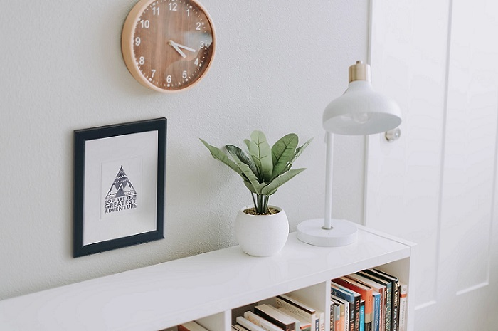

Finding simplicity in life
July 29, 2019 | 3 comments
Life can get complicated really quickly , it doesn't have to be! There are many ways to simplify your life.a few of which we've explored in the past. This week we're taking a bit of a approach through, in how you can find simplicity in the you already Living.
CONTINUE READING